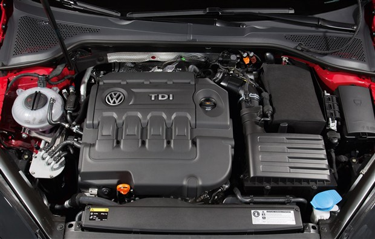
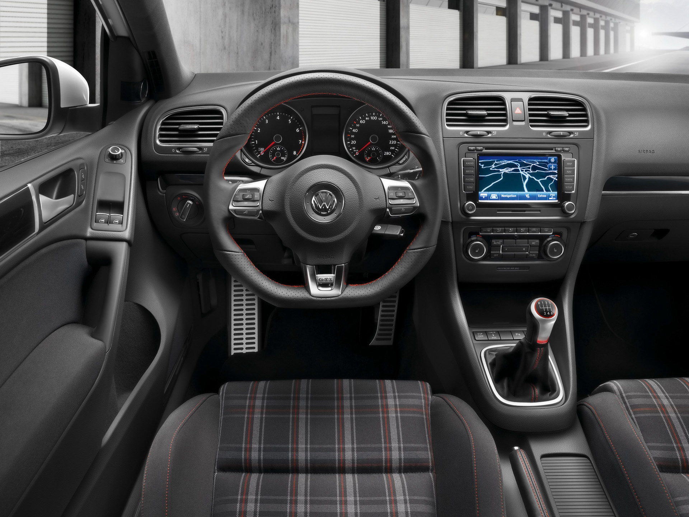
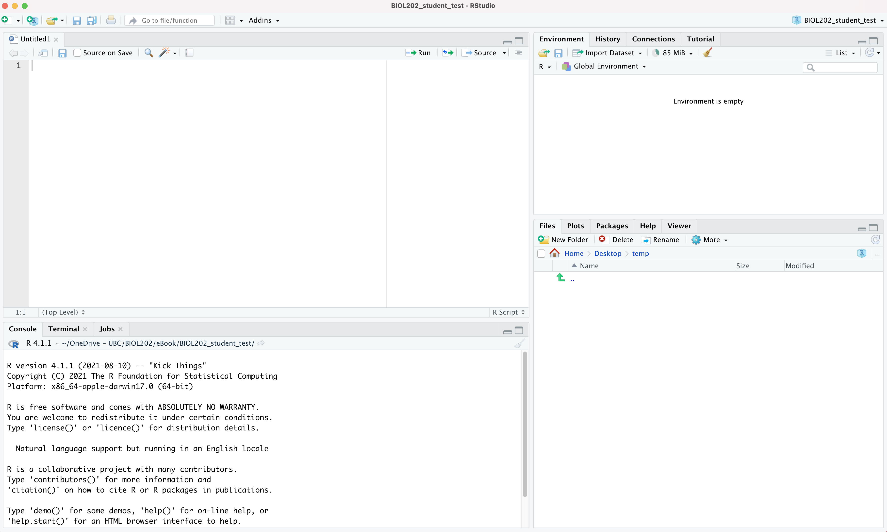
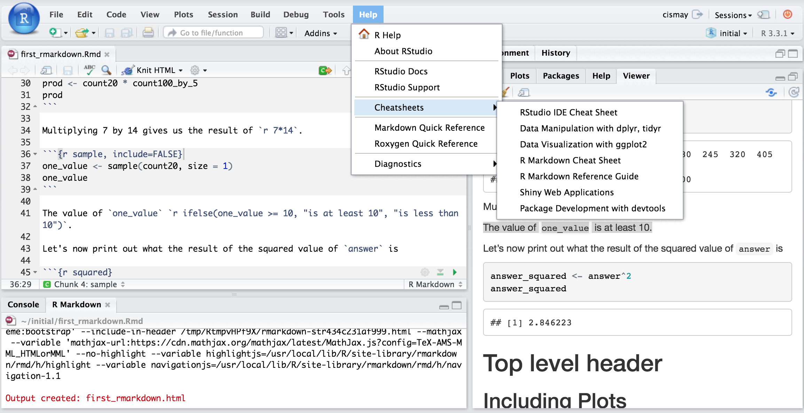

1 What are R and RStudio?
It is assumed that you are using R via RStudio. First time users often confuse the two. At its simplest:
- R is like a car’s engine
- RStudio is like a car’s dashboard.

More precisely, R is a programming language that runs computations while RStudio is an integrated development environment (IDE) that provides an interface by adding many convenient features and tools. So the way of having access to a speedometer, rearview mirrors, and a navigation system makes driving much easier, using RStudio’s interface makes using R much easier as well.
1.1 Installing R and RStudio
Note
At the beginning of term, check the R website for the current version of R, and update to it if you’re not already on it. Once you’ve started into the tutorials, it is recommended that you NOT update again until after term is complete. This is to avoid any unforeseen problems introduced by the update. However, if you have an older operating system on your computer, you’ll want to check compatibility of both R and RStudio before updating.
RStudio is now owned by “posit”, and its website (posit.co) should detect your operating system and provide the appropriate download option automatically. The website with older versions of R is here, and older versions of RStudio is here.
Follow the instructions below, and you are encouraged to view this YouTube video here prior to starting the steps. It talks about installing for different operating systems and different vintages of Macs (e.g. newer M1 chips versus Intel chips).
- Download and install both R and RStudio (Desktop version) on your computer.
Note
R needs to be installed successfully >prior< to installing RStudio (because the latter depends on the former)
- Figure out what operating system (and version) you have on your computer. Windows versions are identified by a single number (e.g. “Windows 11”); macOS versions have both a number and a name (e.g. “macOS 14, Sonoma”). If you’re not sure, check Settings > System > About on Windows, or the Apple menu > About This Mac on a Mac.
- Go to this website and click on the appropriate download link at the top of the page (depending on your operating system, Windows / MacOS / Linux)
- For Windows users, download the “base” version; the file will be named
R-x.y.z-win.exe, wherex.y.zis whatever the current version number is (e.g.R-4.5.1-win.exe). Executing this file launches a familiar Windows Setup Wizard that will install R on your computer. - For Mac users, download the “pkg” file that is appropriate for your version of MacOS; the file will be named
R-x.y.z.pkg(e.g.R-4.5.1.pkg). Download and run this installation package—just accept the default options and you will be ready to go.
- For Windows users, download the “base” version; the file will be named
- Now to install RStudio: once you have installed “R”, go to this website and click on the “download RStudio desktop” button under the “Install RStudio” heading. The website should detect what operating system you’re using and offer you the appropriate version.
2 Start using R & RStudio
Recall our car analogy from a previous tutorial. Much as we don’t drive a car by interacting directly with the engine but rather by using elements on the car’s dashboard, we won’t be using R directly but rather we will use RStudio’s interface. After you install R and RStudio on your computer, you’ll have two new programs AKA applications you can open. We will always work in RStudio and not R. In other words:

Launch RStudio on your computer to make sure it’s working (it loads R for you in the background).
2.1 The RStudio Interface
When you open RStudio, you should see something similar to the following:

Note the four panes which are four panels dividing the screen: the source pane (top left), console pane (bottom left), the files pane (bottom right), and the environment pane (top right). Over the course of this chapter, you’ll come to learn what purpose each of these panes serves.
2.2 Coding basics
Please go through section 1.2 of the ModernDive online text called “How do I code in R?”. This should take about 15 minutes.
You may get overwhelmed by all the terminology on that page… don’t worry! You can simply bookmark that page for future reference. But it does cover the coding basics very well!
2.3 R packages
An R package is a collection of functions, data, and documentation that extends the capabilities of R. They are written by a world-wide community of R users. For example, among the most popular packages are:
ggplot2package for data visualizationdplyrpackage for data wranglingreadrpackage for reading data files into R
In this course we load packages one at a time, by name, as in the examples above. You may see other resources load a bundle called tidyverse, which loads ggplot2, dplyr, readr and several others in one line. We deliberately do not do that here: loading packages individually means you can always tell which package a function came from, and when something goes wrong the error message points somewhere you can actually look.
There are two key things to remember about R packages:
Installation: Most packages are not installed by default when you install R and RStudio. You need to install a package before you can use it. Once you’ve installed it, you likely don’t need to install it again unless you want to update it to a newer version of the package.
Loading: Packages are not loaded automatically when you open RStudio. You need to load them everytime you open RStudio.
2.4 Package installation
Let’s install the dplyr package, as an example of how installing works.
Note
In practice you will have installed almost everything already, in one step, by installing the course’s biol202 package — see the setup instructions. Installing biol202 also installs dplyr, ggplot2, readr and every other package the course uses. This section is here so you know how installation works, and can install something new when you need it.
There are two ways to install an R package:
- In the Files pane:
- Click on “Packages”
- Click on “Install”
- Type the name of the package under “Packages (separate multiple with space or comma):” In this case, type
dplyr - Click “Install”
- Alternatively, in the Console pane type the following
Warning
Later, when you start using R Markdown, never include the following “install.packages” code within your R Markdown document; only install packages by typing directly in the Console!
install.packages("dplyr")If you are attempting to install a package (using install.packages) and you get this message:
There is a binary version available but the source version is later:
binary source needs_compilation
systemfonts 1.0.2 1.0.3 TRUE
Do you want to install from sources the package which needs compilation? (Yes/no/cancel)Respond with “no” (without quotes). Do NOT respond “Yes”.
Note
When working on your own computer, you only need to install a package once, unless you want to update an already installed package to the latest version (something you might do every 6 months or so). HOWEVER: If you’re working on a school computer (in a computer lab or in the library), you may need to install packages each session, because local files (on the computer) are automatically deleted daily. If you’re unsure what packages are already installed, consult the “packages” tab in the lower-right RStudio pane when you start up RStudio; installed packages are listed there.
2.5 Package loading
Let’s load the packages we will use most often.
After you’ve installed a package, you can load it using the library() command. Run the following code in the Console pane — one library() line per package, which is the convention we follow all term:
library(dplyr)
library(ggplot2)
library(readr)
Note
You have to reload each package you want to use every time you open a new session of RStudio. This is a little annoying to get used to and will be your most common error as you begin. When you see an error such as
Error: could not find functionremember that this likely comes from you trying to use a function in a package that has not been loaded. Remember to run the library() function with the appropriate package to fix this error.
2.6 Intro to R Markdown
As you may have learned already from relevant section in the Biology Procedures and Guidelines resource, R Markdown is a markup language that provides an easy way to produce a rich, fully-documented reproducible analysis. It allows its user to share a single file that contains all of the commentary, R code, and metadata needed to reproduce the analysis from beginning to end. R Markdown allows for “chunks” of R code to be included along with Markdown text to produce a nicely formatted HTML, PDF, or Word file without having to know any complicated programming languages or having to fuss with getting the formatting just right in a Microsoft Word DOCX file.
One R Markdown file can generate a variety of different formats and all of this is done in a single text file with a few bits of formatting. You’ll be pleasantly surprised at how easy it is to write an R Markdown document after your first few attempts.
We will be using R Markdown to create reproducible lab reports.
Note
R Markdown is just one flavour of a markup language. RStudio can be used to edit R Markdown. There are many other markdown editors out there, but using RStudio is good for our purposes.
2.7 Literate programming with R Markdown
CautionActivity
View the following short video:
The preceding video described what can be referred to as literate programming: authoring a single document that integrates data analysis (executable code) with textual documentation, linking data, code, and text. In R Markdown, the executable R code is placed in “chunks”, and these are embedded throughout sections of regular text.
For an example of a PDF document that illustrates literate programming, see here. It accompanied a lab-based experiment examining the potential for freshwater diatoms to be successfully dispersed over long distances adhered to duck feathers.
CautionActivity
View the following youtube video on creating an R Markdown document.
Tip
If you’d like additional introductory tutorials on R Markdown, see this resource.
2.8 Making sure R Markdown knits to PDF
Now we’re going to ensure R Markdown works the way we want. A key functionality we need is being able to “knit” our report to PDF format.
With the newest versions of RStudio, you may be able to knit to PDF without doing anything special first.
Let’s give this a try:
Step 1: While in RStudio, select the “+” dropdown icon at top left of RStudio window, and select R Markdown. RStudio may at this point install a bunch of things, and if so that’s ok. It may also ask you to install the rmarkdown package.. if it does, do so!
Step 2: A window will then appear and you can replace the “Untitled” with something like “Test”, then select OK.
Step 3: This will open an R Markdown document in the top left panel. Don’t worry about all the text in there at this point. What we want to do is test whether it will “knit” (render) the document to PDF format.
Step 4: Select the “Knit” drop-down icon at the top of the RStudio window, and select “Knit to PDF”. RStudio will ask you to first save the markdown file (save it anywhere with any name for now), then it will process the markdown file and render it to PDF.
If this worked, great!! You can ignore the next section here. If it didn’t work, then proceed to this next section:
If the preceding steps did not result in you being able to knit your markdown document to PDF, then do this:
Install the tinytex package by typing this code into the command console of RStudio:
install.packages("tinytex")Then, once that has installed successfully, type the following:
tinytex::install_tinytex()RStudio will take a minute or two to install a bunch of things. Once it’s done, we’re ready to try knitting to PDF.
Note
Recall you only need to install a package once! And this should be the last time you need to deal with the tinytex package (you won’t need to “load” it in future), because now that it’s installed, its functionality works in the background with RStudio.
Now go back to the steps 1 through 4 above to try knitting your markdown document to PDF.
In a future tutorial we’ll discuss how to use R Markdown as part of a reproducible workflow.
2.9 Extra resources
Note
This page is still under development (Aug 2022)
If you are googling for R code, make sure to also include package names in your search query (if you are using a specific package). For example, instead of googling “scatterplot in R”, google “scatterplot in R with ggplot2”.
Rstudio provides links to several cheatsheets that will come in handy throughout the semester.
You can get nice PDF versions of the files by going to Help -> Cheatsheets inside RStudio:

The book titled “Getting used to R, RStudio, and R Markdown” by Chester Ismay, which can be freely accessed here, is also a wonderful resource for for new users of R, RStudio, and R Markdown. It includes examples showing working with R Markdown files in RStudio recorded as GIFs.
2.10 R Resources Online
| URL | Purpose |
|---|---|
| https://whitlockschluter3e.zoology.ubc.ca. | R resources to accompany Whitlock & Schluter text |
| https://datacarpentry.org/R-genomics/01-intro-to-R.htm | l Data Carpentry Intro R tutorials |
| https://r-dir.com/learn/tutorials.html | List of useful tutorials including videos |
| https://www.rstudio.com/resources/webinars/ | Various online learning materials at RStudio |
| https://rmd4sci.njtierney.com | R Markdown for Scientists |
| http://r4ds.had.co.nz/index.html | Hadley Wickham’s online book |
| URL | Purpose |
|---|---|
| http://blog.revolutionanalytics.com/beginner-tips/ | Beginner tips |
| https://mran.microsoft.com/packages/ | Tool for exploring packages |
| URL | Purpose |
|---|---|
| https://www.zoology.ubc.ca/~schluter/R/ | UBC zoology site handy stats reference |
| http://statmethods.net/ | Good general reference |
| URL | Purpose |
|---|---|
| http://statmethods.net/ | Good general reference for graphing |
| http://ggplot2.org/book/ | Hadley Wickhams’s ggplot2 book online |
| http://stats.idre.ucla.edu/r/seminars/ggplot2_intro/ | Great tutorial on ggplot2 |
| http://www.cookbook-r.com/Graphs/ | Graphing with ggplot2 |
| URL | Purpose |
|---|---|
| https://www.r-bloggers.com/ | Popular blog site, lots of info |
| http://rseek.org/ | Search engine for R help |
| URL | Purpose |
|---|---|
| https://cos.io/ | Center for Open Science |
| https://ropensci.org/ | Open science R resources |
| http://geoscripting-wur.github.io/RProjectManagement/ | Lessons about version control |
| https://nicercode.github.io/ | Helping to improve your code |
| URL | Purpose |
|---|---|
| http://spatial.ly/r/ | Example maps with R |
| https://rstudio.github.io/leaflet/ | Online mapping with R |
| https://www.earthdatascience.org/courses/earth-analytics/ | Excellent course |
| https://geoscripting-wur.github.io/ | Amazing “geoscripting” tutorial |